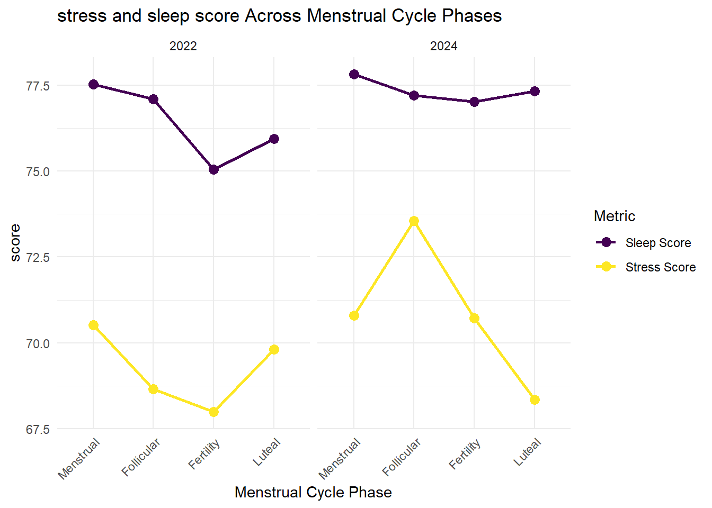
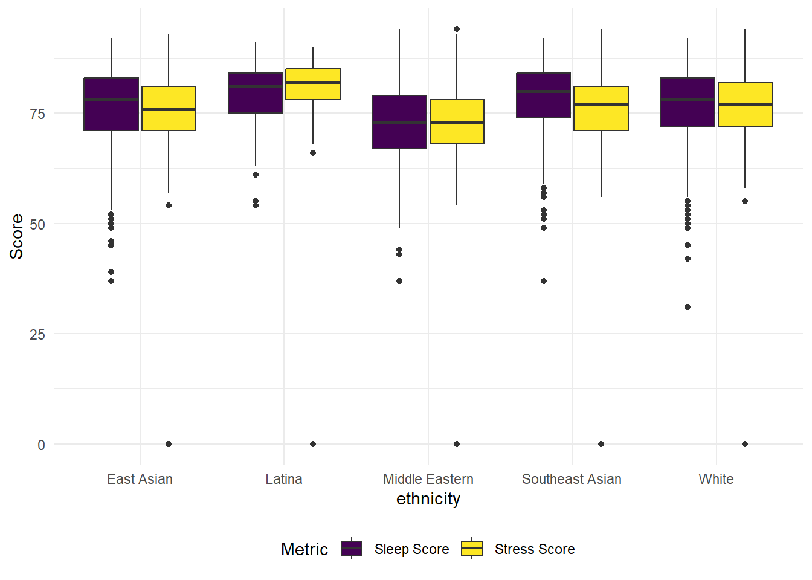

sleep_stress_EDA
Load the data
View the sleep time for different participants in each study interval
# plot the mean timein bed in hour
sleep |>
group_by(id, study_interval)|>
summarize(mean_sleep = mean(timeinbed/60),
sd_sleep = sd(timeinbed),
mean_efficiency = mean(efficiency),
sd_efficiency = sd(efficiency)) |>
ggplot(aes(x = id, y = mean_sleep, color = id))+
geom_point()+
facet_grid(study_interval~.)## `summarise()` has grouped output by 'id'. You can override using the `.groups`
## argument.
The average sleep time for each person is different each study interval and varied across participants. In 2022, some participants slept less than 5 hours and some slept more than 8 hours. In 2024, most participants have better sleep length, 7-8 hours.
Combine the sleep and stress score
# join two data sets, using inner join
sleep_score1 = sleep_score |>
select(id,study_interval, day_in_study, overall_score)
stress_score1 = stress_score |>
select(id, study_interval, day_in_study, stress_score)|>
distinct(id, study_interval, day_in_study, .keep_all = TRUE)
sleep_stress = inner_join(sleep_score1, stress_score1, join_by("id", "study_interval", "day_in_study"))
# check of na values
sum(is.na(sleep_stress$overall_score))## [1] 0sum(is.na(sleep_stress$stress_score))## [1] 0Load and clean the hormone data for menstrual phases
hormone1 = hormone |>
select(id,phase, day_in_study, lh, estrogen,fatigue,moodswing)|>
mutate(
phase = factor(phase, levels = c("Follicular", "Fertility", "Luteal", "Menstrual")),
fatigue = factor(fatigue,
levels = c("Low", "Moderate", "High", "Very High")),
moodswing = factor(moodswing,
levels = c("Very Low/Little", "Low", "Moderate", "High","Very High","Not at all"))
)
phase_order <- c("Menstrual", "Follicular", "Fertility", "Luteal")Joined data with the phase in hormone dataset
sleep_stress_hormone =
inner_join(sleep_stress,hormone1, join_by(id, day_in_study))Now explore the changes of the stress score with the menstrual cycle
sleep_stress_hormone |>
group_by(phase, study_interval) |>
summarize(
mean_sleep_score = mean(overall_score, na.rm = TRUE),
mean_stress_score = mean(stress_score, na.rm = TRUE),
.groups = "drop"
) |>
pivot_longer(
cols = starts_with("mean_"),
names_to = "metric",
values_to = "value"
) |>
mutate(
metric = recode(metric,
mean_sleep_score = "Sleep Score",
mean_stress_score = "Stress Score"),
phase = factor(phase, levels = phase_order)
) |>
ggplot(aes(x = phase, y = value, color = metric, group = metric)) +
geom_line(size = 1) +
geom_point(size = 3) +
facet_wrap(~study_interval) +
labs(color = "Metric", y = "Mean Score", x = "Phase") +
labs(
title = "stress and sleep score Across Menstrual Cycle Phases",
x = "Menstrual Cycle Phase",
y = "score"
) +
theme_minimal() +
theme(axis.text.x = element_text(angle = 45, hjust = 1))## Warning: Using `size` aesthetic for lines was deprecated in ggplot2 3.4.0.
## ℹ Please use `linewidth` instead.
## This warning is displayed once every 8 hours.
## Call `lifecycle::last_lifecycle_warnings()` to see where this warning was
## generated.
sleep_stress_hormone |>
ggplot(aes(x = phase, y = overall_score))+
geom_boxplot()+
labs(
title = "sleep score Across Menstrual Cycle Phases",
x = "Menstrual Cycle Phase",
y = "score"
) +
theme_minimal() +
theme(axis.text.x = element_text(angle = 45, hjust = 1))
Explore the variation among different participants. adding the id, ethnicity and birthyear of the subjects.
sleep_stress_hormone2 = subject |>
select(id, birth_year, ethnicity) |>
mutate(age = 2025- birth_year) |>
full_join(sleep_stress_hormone, join_by(id)) View the stress and sleep score across menstrual cycle phases for each
sleep_stress_hormone2 |>
group_by(phase, study_interval, ethnicity) |>
summarize(
mean_sleep_score = mean(overall_score, na.rm = TRUE),
mean_stress_score = mean(stress_score, na.rm = TRUE),
.groups = "drop"
) |>
pivot_longer(
cols = starts_with("mean_"),
names_to = "metric",
values_to = "value"
) |>
drop_na()|>
mutate(
metric = recode(metric,
mean_sleep_score = "Sleep Score",
mean_stress_score = "Stress Score"),
phase = factor(phase, levels = phase_order)
) |>
ggplot(aes(x = phase, y = value, color = ethnicity, group = ethnicity)) +
geom_line(size = 1) +
geom_point(size = 3) +
facet_grid(~ study_interval + metric) +
labs(color = "Ethnicity", y = "Mean Score", x = "Phase") +
labs(
title = "stress and sleep score Across Menstrual Cycle Phases",
x = "Menstrual Cycle Phase",
y = "score"
) +
theme_minimal() +
theme(axis.text.x = element_text(angle = 45, hjust = 1)) variation of sleep score and stress score across different ethnicity
variation of sleep score and stress score across different ethnicity
sleep_stress_hormone2 |>
select(id, ethnicity, stress_score, overall_score) |>
drop_na()|>
pivot_longer(
cols = c(stress_score, overall_score),
names_to = "metric",
values_to = "value"
) |>
mutate(
metric = recode(metric,
overall_score = "Sleep Score",
stress_score = "Stress Score"
)
) |>
ggplot(aes(x = ethnicity, y = value, fill = metric)) +
geom_boxplot(position = position_dodge(width = 0.8)) +
labs(y = "Score", fill = "Metric")
retry to push